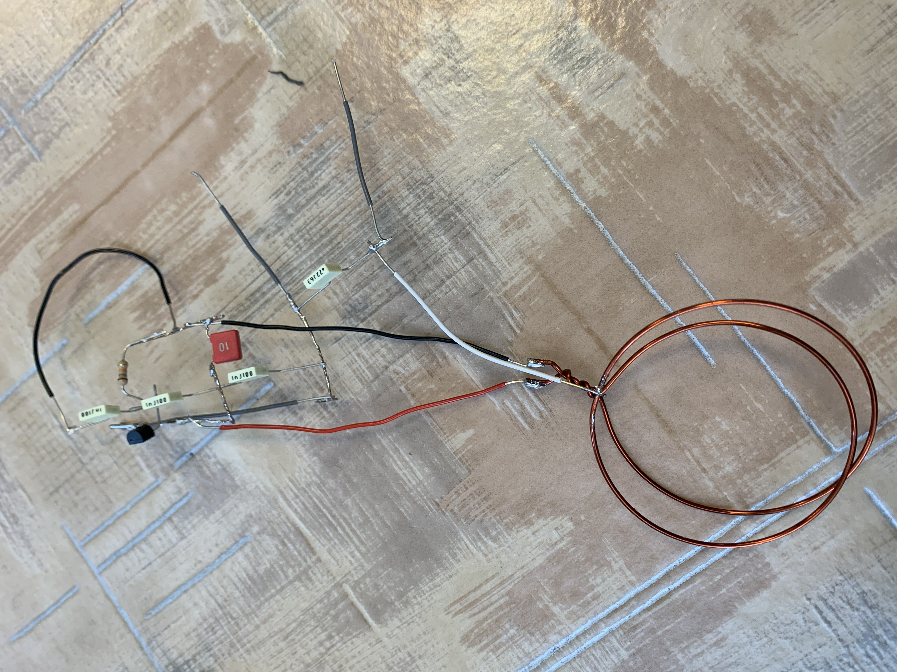
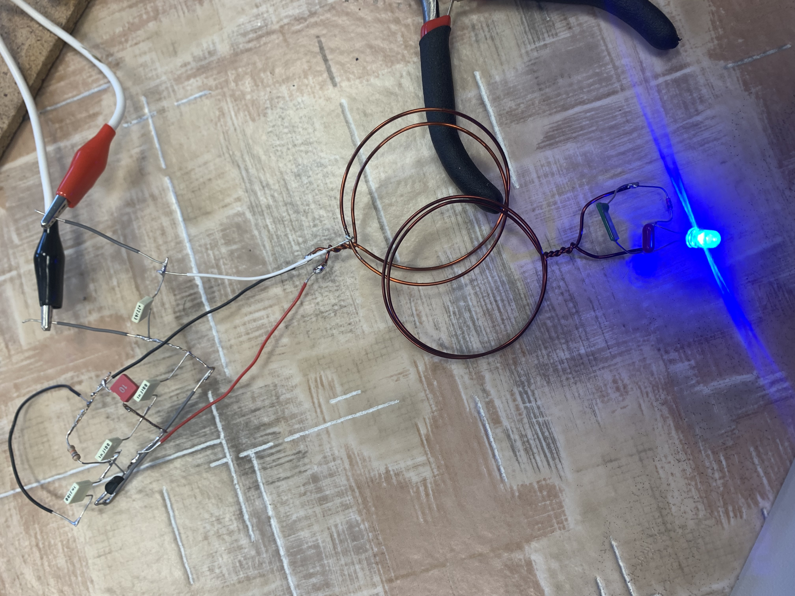

A rajzot követve legjobb forrasztási tudásomat használva pont forrasztással összekötöttem az alkatrészeket. Miután ezzel megvoltam csináltam kimenetet a pozitív és negatívnak egy-egy drót segítségével. Ezt követően egy cső segítségével csináltam egy réz karikát mely segítségével fog működni a másik áramkörben a LED.
Mindezek után megépítettem az áramkör másik részét mely tartalmaz 2db kondenzátort, 1db diódát és 1db LED-et. Ehhez szintén készítettem egy réz karikát melyet hozzákötöttem az áramkörhöz.
Így miután mindennel kész voltam már csak a teszt maradt hátra. Rákötöttem az elsődleges áramkörre 15 Voltot. Majd miután ezzel megvoltam a második áramkör réz karikáját közelíteni kezdtem az első áramkör réz karikájáház, s ahogy egyre közeledtek a LED annál erősebben kezdett világítani.
